Running the Healthcare Bill Challenge
Everything a facilitator needs: preparing characters and bills, running the game on the projector, and walking the class through the answers.
iOverview
The game has three screens. They all update live, within about a second.
Projected for the room. Shows the 4 patient characters, their questions, each team's progress and a QR code per team.
Opened on phones by scanning a character's QR code. Teams read the bill and type answers here.
For the facilitator: create characters, assign them to teams, start or pause the game, and reveal answers.
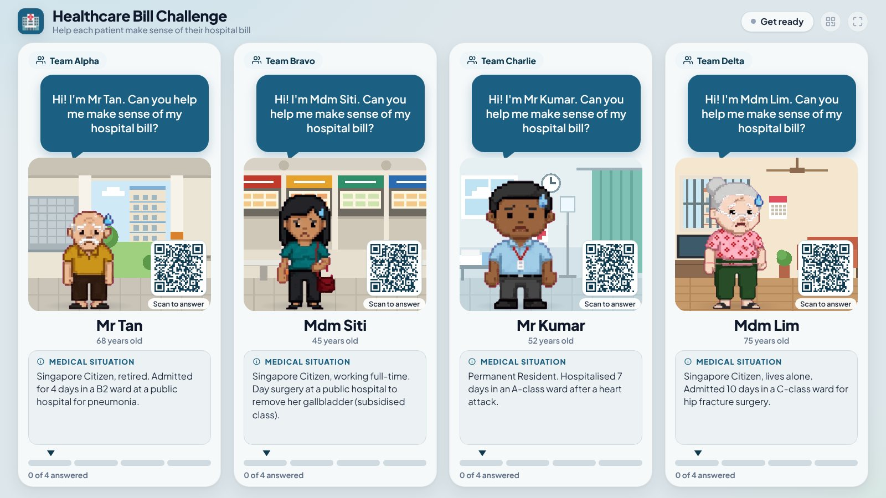
How a round works
- Each team gets a patient character (and usually a printed bill).
- The character asks questions, for example "How much is MediShield Life covering?".
- A right answer moves the team to the next question, and the character gets happier.
- A wrong answer makes the character confused ("Hmm… are you sure?") and shows a hint.
- The first team to answer everything gets 🥇. Then you go through the answers with the class.
⚡Quick start (5 minutes)
- Open the admin page. From the main screen, triple-click the 🏥 icon or press Shift+A.
- Go to the Characters tab. Click Add samples to get 4 ready-made patients, or click New character to make your own.
- Go to the Live game tab. Pick a character and type a team name for each of the 4 teams.
- Open the Main screen on the projector, then press F for full screen.
- When everyone is ready, click ▶ Live. Teams scan their QR code and start answering.
- At the end, flip each card to go through the answers (see Debrief). Then click Reset all progress before the next class.
- Bill sizes: MOH's typical (median) bills for each condition and ward.
- Rules: MOH subsidy bands, MediShield Life deductibles, co-insurance, claim limits and pro-ration, and CPF MediSave withdrawal limits.
1Characters
Characters are saved in a library, so you can reuse them in future sessions. Open Characters and click a card to edit it.
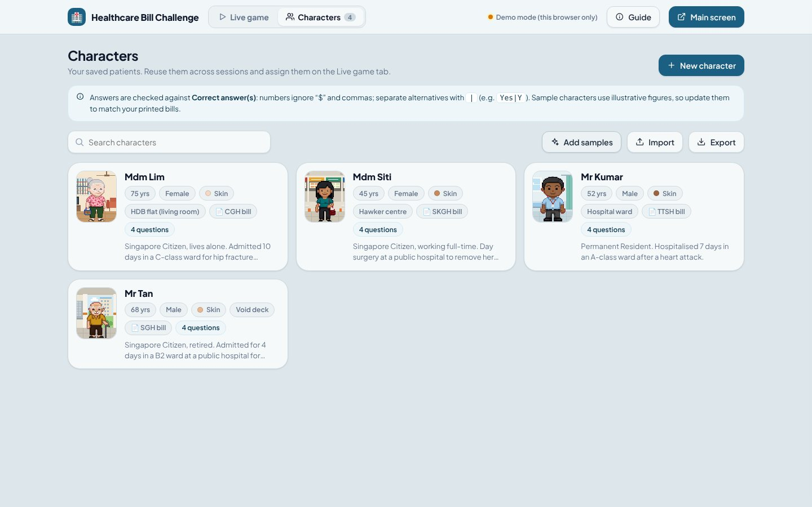
| Field | What it does |
|---|---|
| Name, age, gender | The character's sprite is picked from gender and age: under 20 is a teen, 20–59 an adult, 60+ elderly. |
| Skin tone | Five levels; the sprite is recoloured to match. |
| Background | A scene behind the character: hospital ward, polyclinic, HDB flat, void deck, park, hawker centre, MRT platform, HDB estate, or plain. |
| Opening line | What the character says before the game starts. {name} is replaced with the name. Leave it blank for the default. |
| Thank-you line | What the character says once the team finishes. {name} works here too. |
| Medical situation | A short description shown under the character on the main screen. |
| Medical bill | The bill teams see on their phones. See Medical bill. |
| Questions | Each question has the question, the correct answer(s), an optional ± margin, a hint (shown after a wrong answer) and a debrief explanation (shown when you reveal answers). Drag the ⠿ handle or use ↑ ↓ to reorder, and use Add question for more. |
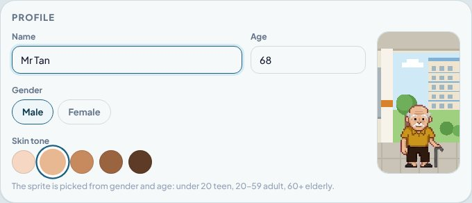
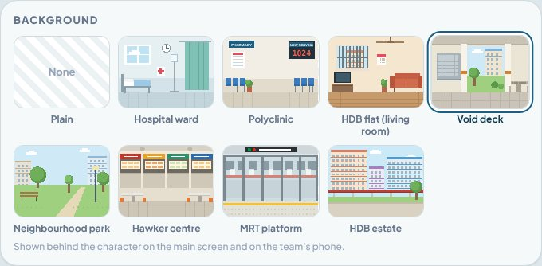
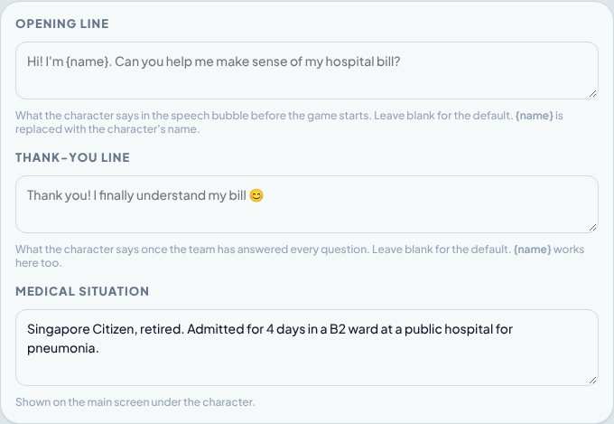
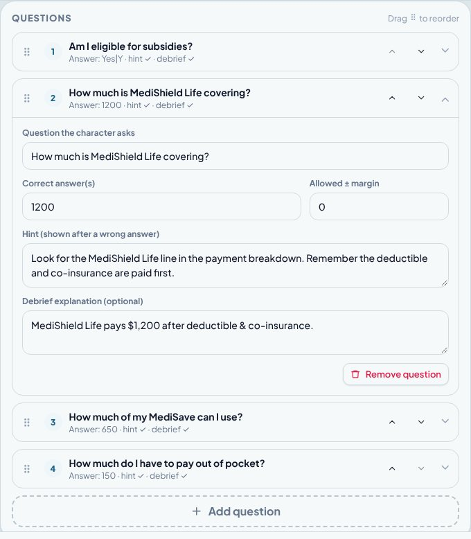
How answers are checked
- Numbers:
$1,200,1200and1200.00all match1200. The ± margin accepts close answers; for example, a margin of 1 accepts anything from 1199 to 1201. - Words: case and punctuation are ignored.
- Several right answers: separate them with
|, for exampleYes|Y. - Answer type controls the answer box on the phone and how the answer shows in the debrief:
- Money: a
$before the box, shown as $1,200. - Number: no
$, with an optional Unit after the box (for example%ordays), shown as 34% or 6 days. Teams can type the unit or leave it out. - Text: a normal keyboard, for answers like Yes/No or B2.
- Money: a
2Medical bill
Each character can have a sample bill. Teams see it on their phones, below the answer box.
- Issuing hospital: choose a parody name (for example "Singapore Generous Hospital"), or pick Custom name….
- Bill details: bill no., ward/class, admitted and discharged dates. All optional.
- Line items: a description, an amount and a style:
- Item: a normal line
- Deduction: the amount shows in green
- Total: bold, with lines above and below
- Note: a small italic remark
- Amounts show exactly as typed, for example
-$1,200.00. Type?for a figure teams must work out; it shows as a highlighted box. - Show to teams turns the bill on or off. Reset to template restores the standard lines.
- The Preview at the bottom of the section shows exactly what teams will see.
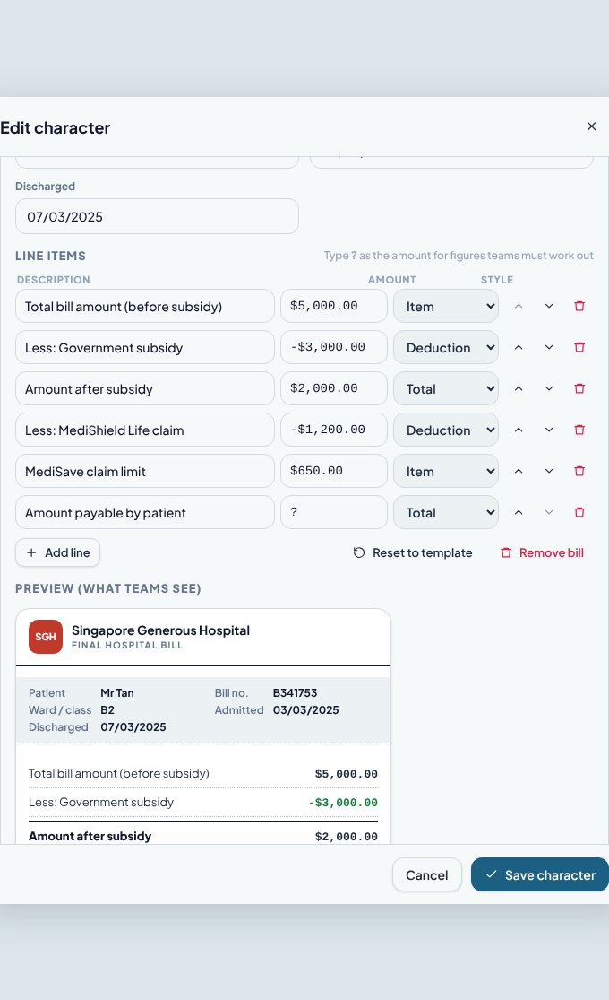
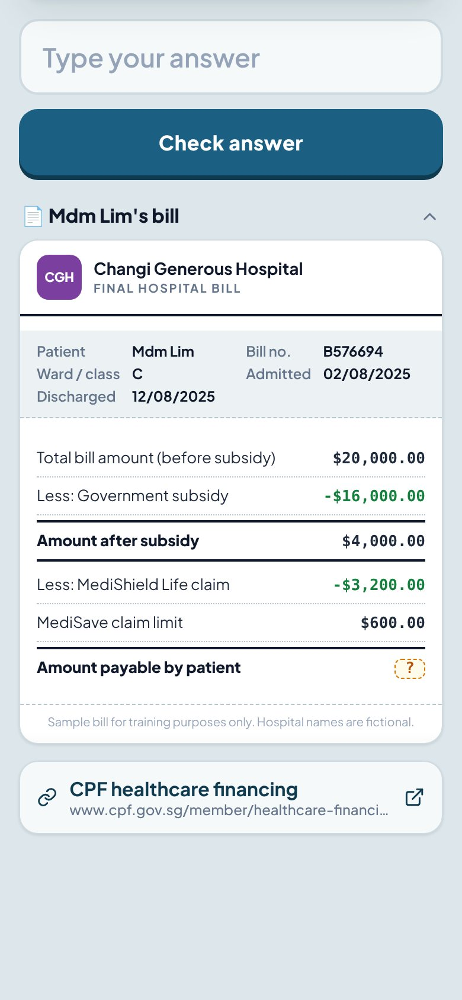
3Setting up a session (Live game tab)
Teams and characters
Each of the 4 team cards has a team name (click it to edit) and a character dropdown. A card also shows that team's progress, their last answers (✓ right, ✗ wrong), and buttons to Reset the team, open their Team page, or copy their link 🔗.
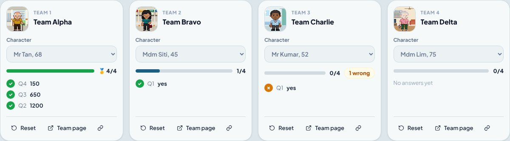
Game status
| Status | What happens |
|---|---|
| Get ready | Characters say their opening line, and the intro card shows (if it's on). Teams can open their page and read the bill but can't answer yet. |
| ▶ Live | Questions appear, and teams can submit answers. |
| ⏸ Pause | Freezes the game. Teams see "Game paused". |
Allow calculator
Switch on Allow calculator, next to Reveal answers, to give teams a 🧮 Calculator button under their answer box. It handles + − × ÷, brackets and % (for example 7501 × 34%). Use this answer copies the result into the answer box. Switch it off and the calculator disappears from every phone straight away. It's off by default.
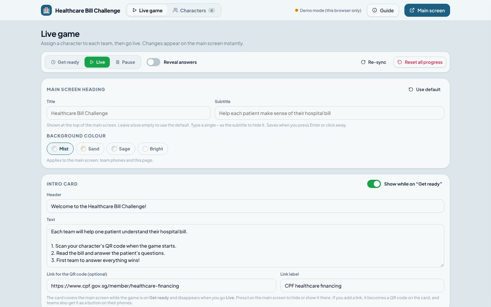
Main screen heading and background
Change the title and subtitle shown at the top of the main screen. The admin header follows the title. Leave a box empty for the default, or type - as the subtitle to hide it. Background colour offers Mist (default), Sand, Sage and Bright, and applies to every screen.
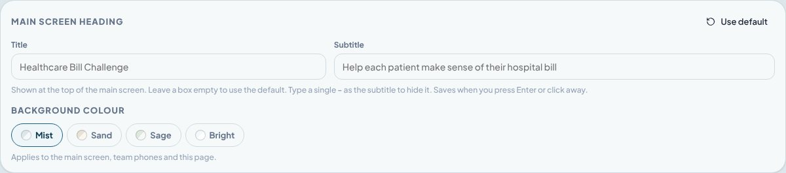
Intro card
Turn on Show while on "Get ready" to cover the main screen with a welcome card before the game starts. Edit its header and text, and optionally add a link, for example a CPF calculator page. The link becomes a QR code on the card and a button on every team's phone. The card disappears automatically when you go Live.
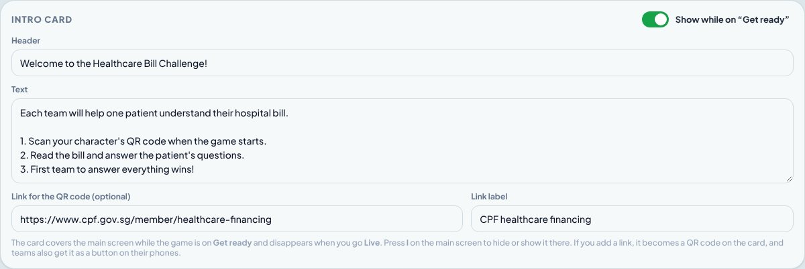
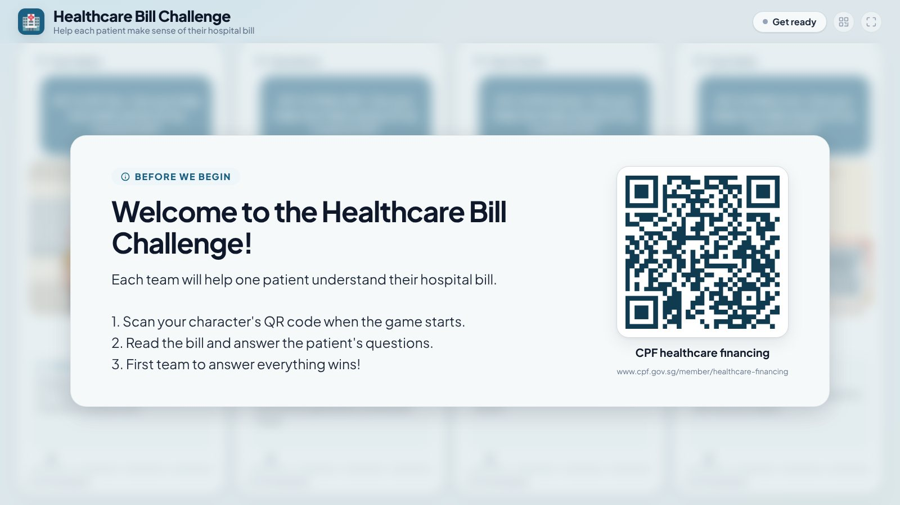
4The main screen during play
- Characters react to each team's progress:
- worried at the start
- happier as questions are answered
- head-scratching ("Hmm… are you sure?") after a wrong answer, with the hint shown for about 12 seconds
- impatient after about 45 seconds without an answer
- cheering with confetti when the team finishes
- The progress bar under each character fills in one segment per question. Finishing teams get 🥇🥈🥉 in order.
- The "🏁 X of 4 finished" counter at the top tracks the race.
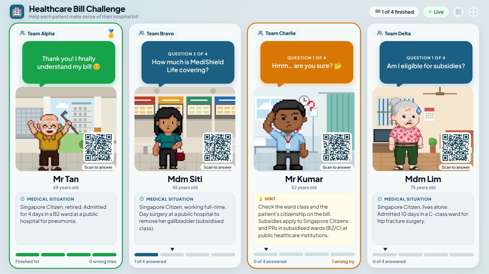
5What teams see on their phones
- A step progress bar, their character, and the medical situation (tap to expand).
- The current question and a large answer box. Money questions show a
$in front, and Number questions can show a unit after it, such as%. - Right answer: a green "Correct!" panel slides up. Wrong answer: an amber "Hmm… are you sure?" panel shows with the hint and a Try again button.
- A 🧮 Calculator button, if you've allowed it in admin.
- The bill below the answer box, and the intro card's link button if you set one.
- Several phones can join the same team; they share one progress. If two people answer at once, only the first answer counts.
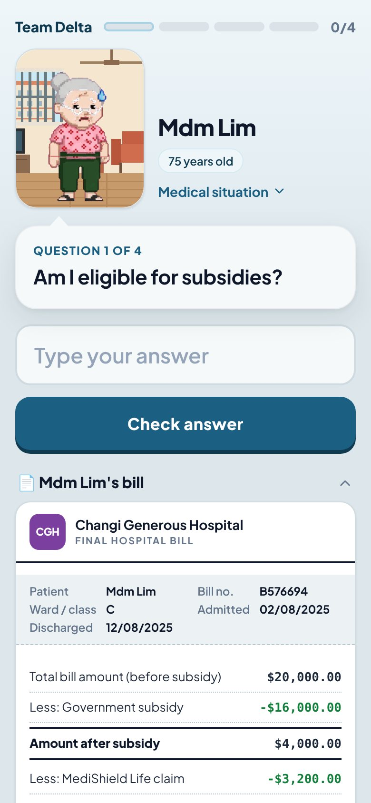
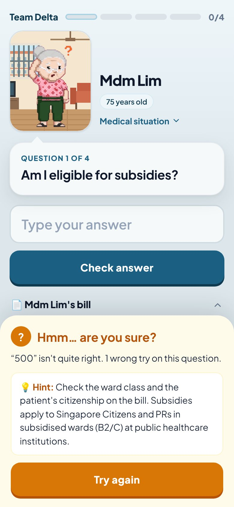
6Debrief: going through the answers
Option A: one character at a time (recommended)
- On the main screen, click the progress bar under a character 5 times within 3 seconds. The card flips over.
- The back shows that character's questions with the answers hidden.
- Click the card to reveal the next answer and its calculation. Talk the class through it, then click again for the next one.
- Reveal all shows every answer at once. Hide all hides them again. ✕ flips the card back.
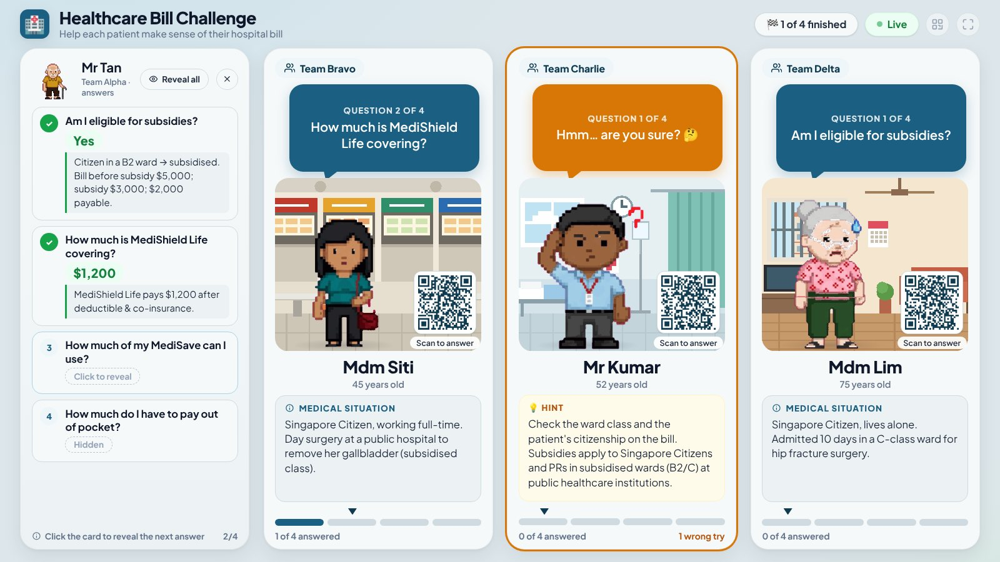
Each card flips on its own, so other teams can keep playing. The flip only affects the screen you click on.
Option B: everything at once
In admin, switch on Reveal answers. The main screen shows a full-screen debrief with all four characters' answers and explanations. Switch it off to return to the game.
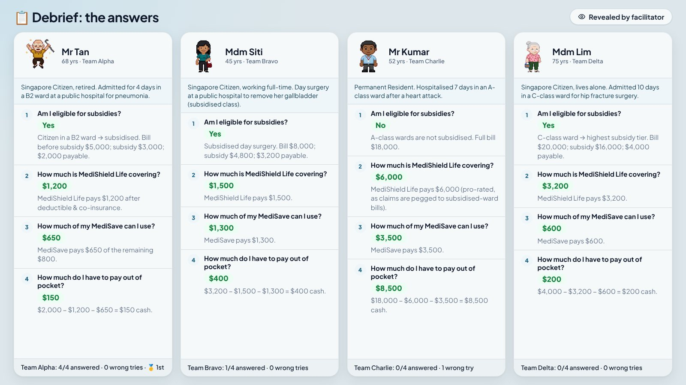
⌨Hidden controls
These are deliberately hidden so the class doesn't see them.
| Where / what | Action |
|---|---|
| Main screen: triple-click the 🏥 icon | Opens admin in a new tab |
| Main screen: Shift+A | Opens admin in a new tab |
| Main screen: F | Full screen on/off |
| Main screen: Q | Show/hide the QR codes |
| Main screen: I | Hide/show the intro card on this screen only |
| Main screen: click a progress bar 5× | Flip that character's card to the answers |
| Main screen address | https://codlnd.github.io/induction/ |
| Admin page address | https://codlnd.github.io/induction/healthcare.html?view=admin |
| This guide | https://codlnd.github.io/induction/guide.html |
ADMIN_PIN in healthcare.html. It keeps casual visitors out but isn't real security.✓After the session
- Switch off Reveal answers if it's on.
- Click Reset all progress so every team starts again from question 1.
- Set the status back to Get ready.
- Optional: click Export on the Characters tab to keep a backup of your library.
?Troubleshooting
| Problem | Fix |
|---|---|
| Teams' answers aren't accepted | Check the game is Live, not Get ready or Paused. |
| A correct answer is marked wrong | Check the character's Correct answer(s). Add alternatives with |, or set a ± margin. Then save and click Update game. |
| Character edits don't show in the game | Click ↻ Re-sync on the Live game tab. |
| The QR code won't scan | Press Q twice to redraw it, make the screen bigger, or share the team link from admin (🔗). |
| A team picked the wrong character | They can rescan the right QR code; each code opens that team's own page. |
| The main screen shows "No game has been set up yet" | Open admin once; it creates the game automatically. Then assign characters. |
| Something looks stuck | Refresh the page. All progress is saved online, so nothing is lost. |
🛠How this app was built
This app was built over two days by a non-programmer working with AI assistants. Nobody wrote the code by hand: it came from describing what was needed, testing it, and giving feedback. This section explains the process so you can build something similar.
The toolkit
An AI coding assistant. It wrote all the code from plain-English requests, tested every change in a hidden browser, took the screenshots in this guide, researched the MOH/CPF figures and published each update.
Google's AI image generator. It drew the pixel-art characters and their animation frames from written prompts.
A free Google database that syncs instantly. It keeps the projector, phones and admin page in step.
Stores the code with its full history and hosts the website for free (GitHub Pages). Every saved change goes live automatically.
The whole app is one HTML file, healthcare.html, with no special software or build steps. That makes it easy to host anywhere and easy for an AI assistant to read and change.
From sketch to today
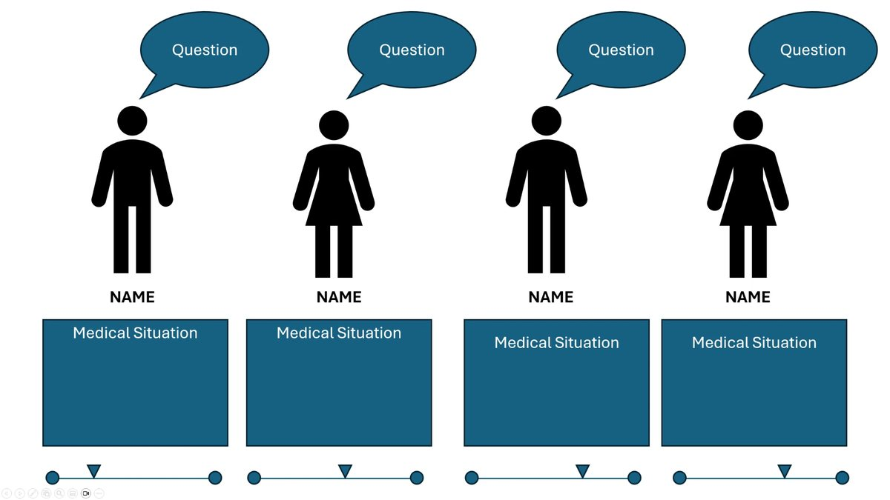
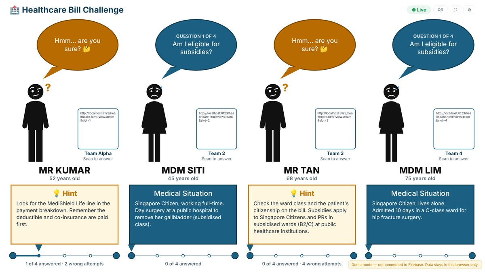
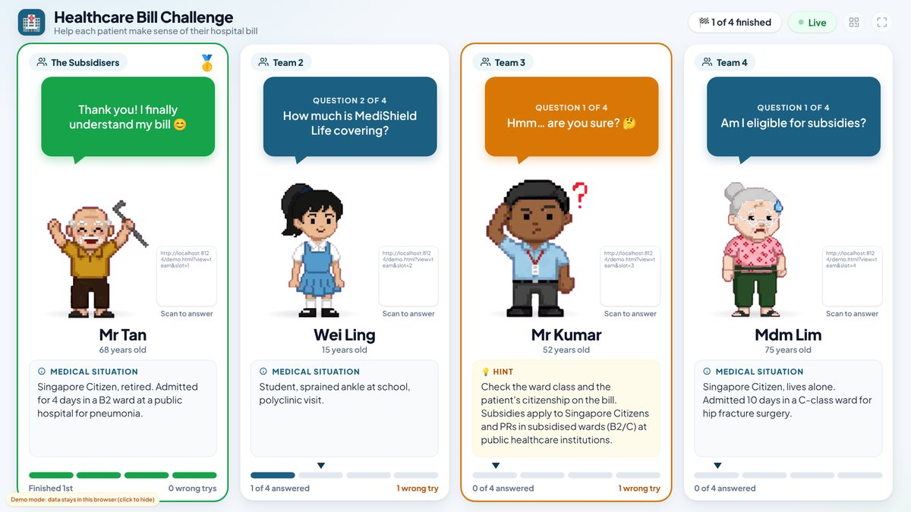
The journey, step by step
- Day 1 am Idea and first version. Described the game in a few paragraphs, attached the sketch, and asked for one HTML file. Claude Code built the main screen, team phone page and admin page, plus answer checking, hints and a debrief switch.
- Day 1 am Going online. Created a free Firebase project (database and security rules), connected GitHub, and set up automatic publishing. Dropped the admin login in favour of a hidden admin shortcut.
- Day 1 am Characters, round 1. Added a 5-level skin tone picker. Wrote detailed Gemini prompts for 6 pixel-art characters (teen, adult and elderly; male and female), each with 16 animation frames.
- Day 1 mid Characters, round 2. Gemini's sheets needed clean-up, so a small script was written to remove the background and repair the frames. Then the whole interface was redesigned using ideas from popular apps: Kahoot-style game cards, Duolingo-style phone feedback, and a Notion/Linear-style admin page.
- Day 1 pm Facilitator features. Editable opening and thank-you lines; 8 Singapore backgrounds; the flip-card answer walkthrough; an editable heading; per-character medical bills; animations that no longer move in sync; softer colour themes; and the intro card.
- Day 2 Polish and real data. Wrote this guide and added screenshots. Moved the site to GitHub Pages after the org blocked the original address. Rebuilt the sample patients from official MOH and CPF figures.
How the graphics evolved
- Drawn figures: simple silhouettes drawn in code, with faces that change from worried to happy.
- Skin tones: a 5-level picker, so characters can reflect Singapore's diversity.
- Pixel-art sprites: Gemini drew each character as a 4×4 sheet of frames: talking, impatient, emotions and celebrating. The prompts asked for:
- a fixed style description, repeated in every prompt
- two exact skin colours, so the app can recolour skin
- a solid magenta background, so it can be removed
- Clean-up script: AI images are never perfect. Some frames were cut off at the waist, overlapped their neighbours, or were drawn at slightly different sizes. A script (
tools/build_sprites.py):- removes the background
- separates the frames
- gives cut-off frames their legs back
- lines every frame up on the same baseline
- Animation: frames play as loops: talking when a question appears, foot-tapping when idle, head-scratching after a wrong answer, cheering at the end. Later, random timing was added so characters don't move in sync.
- Backgrounds: 8 local scenes (hospital ward, polyclinic, HDB flat, void deck, park, hawker centre, MRT platform and HDB estate), drawn in code in the same pixel style.
- Colours: the bright white look was toned down to a softer "Mist" theme, which is easier on the eyes on a projector.
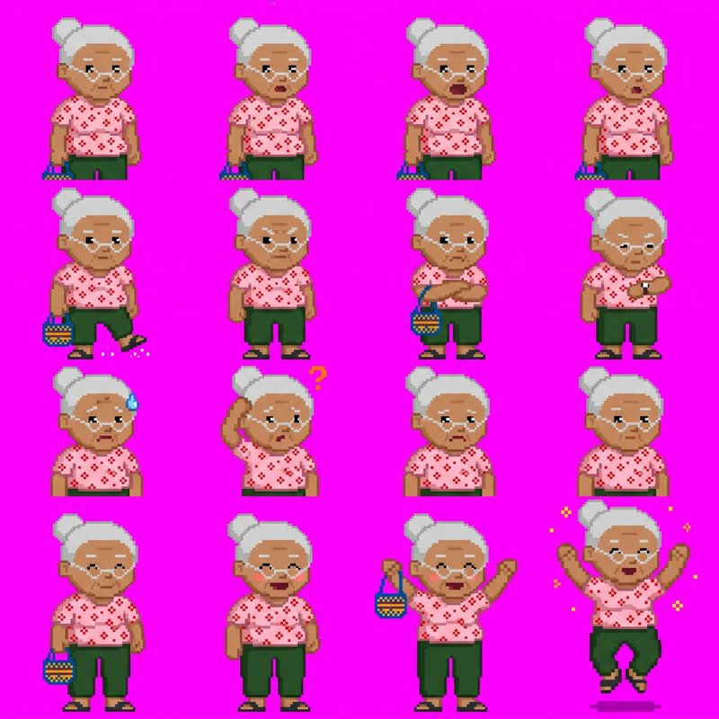
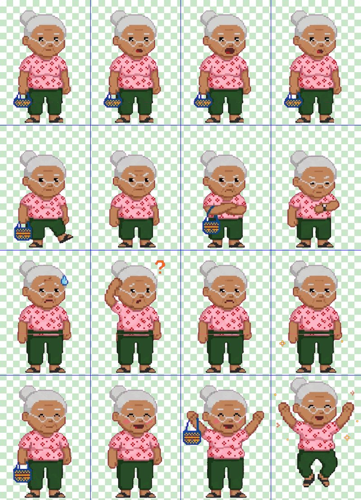
Build your own: a starter recipe
- Sketch it first. Draw the main screen in PowerPoint or on paper. Decide who uses it (facilitator, participants) and on which device (projector, phones).
- Describe it in plain words. Tell an AI coding assistant what happens on each screen, attach your sketch, and ask for one simple HTML file to start with.
- Test early, then give small, specific feedback. For example, "the admin title doesn't change when I change the main screen title". One or two changes at a time works best, and a screenshot helps.
- Add a database only when you need live updates. A free Firebase project is enough for workshop-sized games.
- Use GitHub from day one. It keeps every version and can publish the site for free.
- Make the art separately. Use an image AI with strict, repeatable prompt rules, and expect to clean up the results.
- Check the facts. For anything official (policy figures, rates), ask the assistant to cite official sources, then have a subject expert review the result.
- Write a guide so other facilitators can run it without you.
Example prompts from this build
Lessons learned
- Specific feedback gets specific results. Screenshots with the problem circled were the fastest way to fix things.
- Check your organisation's network early. The first web address (
web.app) was blocked at work, so the site moved togithub.io. - AI art needs rules and a clean-up step. Exact colours, a solid background and a fixed grid made Gemini's output usable.
- Verify numbers. AI search summaries sometimes disagree. Only figures confirmed by both MOH and CPF pages were used, and a short list of assumptions was flagged for experts to check.
- Keep it simple. One file plus free services means no servers to maintain and nothing to install.
- Mind the data. With no login, anyone with the link could change the game, so it holds no personal or sensitive information.